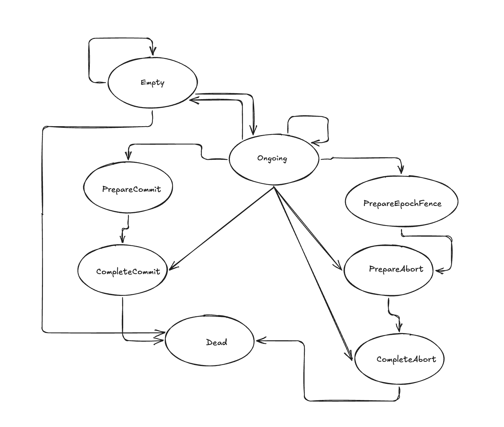

Kafka Transactions
Kafka transactions are implemented through coordinator state, producer epochs, transaction metadata, and commit or abort markers written to partition logs.
Kafka's producer API makes transactions feel compact: initialize, begin, send, commit or abort. Underneath that small surface area is a distributed protocol built around producer identity, epochs, transaction metadata, coordinator state, and commit or abort markers written back to the logs.
Kafka transactions are a coordination protocol layered onto the log. The transaction coordinator records intent, fences stale producers, tracks which partitions are part of the transaction, and eventually causes markers to be written so consumers using read_committed can decide what to expose.
The Main Actors
A transactional producer does not just write records to partition leaders. It first establishes an identity with a transaction coordinator. That coordinator owns the metadata for a given transactional.id, including the producer id, producer epoch, transaction state, timeout, and the set of partitions touched by the transaction.
- Producer: sends transactional requests and regular produce requests.
- Transaction coordinator: owns the transaction metadata for a
transactional.id. - Transaction log: an internal Kafka topic where transaction metadata changes are persisted.
- Partition leaders: store data records and later receive commit or abort markers.
- Consumers: use isolation level to decide whether uncommitted transactional records are visible.
The Request Flow
The happy path is easier to follow when viewed as a sequence of protocol requests. The names below are public Kafka protocol concepts, but the exact version and fields vary by Kafka release.
InitProducerId creates or retrieves the producer id and epoch for a transactional.id. This is also where old producers can be fenced.
AddPartitionsToTxn tells the coordinator which topic partitions belong to the transaction.
Produce writes records to the partition leaders using the producer id, epoch, and sequence numbers.
EndTxn records the decision to commit or abort in the coordinator's transaction metadata.
WriteTxnMarkers is sent internally so partition leaders append commit or abort markers for the transaction.
The State Machine
The transaction coordinator can be understood as a state machine around a single transactional.id. The simplified version below leaves out some implementation detail, but it captures the transitions that explain why commit, abort, and fencing behave the way they do.

| State | What it means | Common way to reach it |
|---|---|---|
| Empty | The coordinator has metadata, but there is no active transaction. | InitProducerId, or a new transaction after a previous completion. |
| Ongoing | A transaction is open and may include records across one or more partitions. | AddPartitionsToTxn or another operation that begins transactional work. |
| PrepareCommit | The coordinator has accepted the intent to commit, but markers still need to be written. | EndTxn with the commit flag. |
| PrepareAbort | The coordinator has accepted the intent to abort, but markers still need to be written. | EndTxn with the abort flag, or fencing that forces the old transaction to abort. |
| PrepareEpochFence | A newer producer epoch is taking ownership and an older producer must be fenced out. | InitProducerId for the same transactional.id with a newer epoch. |
| CompleteCommit | The transaction is committed and commit markers have been written. | Successful internal marker write for the partitions in the transaction. |
| CompleteAbort | The transaction is aborted and abort markers have been written. | Successful internal marker write for the partitions in the transaction. |
| Dead | The transaction metadata is no longer usable for future operations. | Unrecoverable coordinator-side state. |
Why Producer Epochs Matter
The producer id says which logical producer owns a stream of transactional writes. The producer epoch says which incarnation of that producer is current. If an old process pauses, loses connectivity, and later resumes, Kafka cannot let it continue writing as if nothing happened. That old process might otherwise interleave stale writes with a newer process using the same transactional.id.
Fencing solves this. When a new producer is initialized for the same transactional id, the coordinator can bump the epoch. Requests from the older epoch are rejected. If the older producer had an unfinished transaction, the coordinator moves through an abort path so the system can converge on one valid owner and one visible outcome.
Commit Has Three Pieces
A commit is not just a client saying "commit." When the producer sends EndTxn(COMMIT), the coordinator first records the intent by moving the transaction metadata to PrepareCommit. It then sends marker writes to the leaders of the partitions that participated in the transaction, so those logs receive commit control records. After the markers are written, the coordinator can record the completed state for the transaction.
Those markers matter because consumers do not ask the coordinator about every record they read. The log itself needs enough information for a read_committed consumer to return committed transactional records, skip aborted transactional records, and avoid exposing records whose transaction outcome is not yet known.
The Mental Model
Kafka transactions are a protocol for making log visibility deterministic in the presence of multiple partitions, retries, and producer failures. The coordinator does not make the data records appear atomically by moving them around. It records ownership and outcome through transaction metadata:
- Ownership: producer id and epoch decide which producer instance is allowed to write.
- Scope: transaction metadata records which partitions are part of the transaction.
- Outcome: commit or abort markers let partition logs reveal the final transaction decision.
- Visibility: consumers use isolation level to decide whether those records should be returned.
The commit or abort decision is distributed across protocol requests, the coordinator state machine, persistent metadata, and markers written into the same log abstraction Kafka is already built around.